Compression is Creation
Holly Herndon & Mat Dryhurst
2024
See original publication here.
Compression is Creation
Classified (2021)
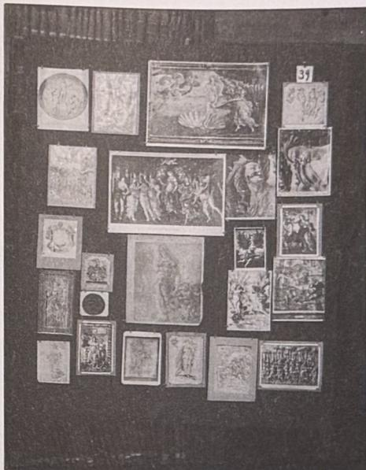
Aby Warburg, photograph of Bilderatlas Mnemosyne panel 39. 1929. Photo: Wootton/fluid. Courtesy The Warburg Institute, London.
Classified is a self-portrait series that explores the classification 'Holly Herndon' embedded within OpenAI's CLIP model.
In 2021, Herndon and Dryhurst collaborated with WolfBear Studio's Jordan Meyer and Patrick Hoepner to develop a technique they called 'Beacons' (later known as 'textual inversion') for directly interrogating the concept of Herndon (rather, her 'embedding') within AI models. The approach allowed them to prompt Herndon's embedding with various art historical works and then ask the model to produce portraits of her in that style. To make the portrait, the model draws from all of the information tagged 'Holly Herndon' in its dataset and then synthesises an image by pooling characteristics that it recognises as belonging to Herndon (e.g., crimson hair, blue eyes) with those of the historical works.
Not everything has an embedding, only entities with a sufficiently large internet presence to reach the model's threshold for recognition. Herndon's is a result of her public presence as an artist, and is largely constructed from press images and artworks tagged with her name. She and Dryhurst released selected Classified portraits as an NFT collection in October 2021. The related research has served as the basis for further projects, including their work for the 2024 Whitney Biennial, xhairymutantx.
We can't say for sure if this was the first embeddings-based artwork of all time, but as we had to build the code base with Wolf Bear to execute it, we're confident it was the first text embeddings work using CLIP in this domain in this era. We showed Sam Altman some pieces from Classified in a bar in San Francisco in Jan 2022 and he was like, 'How the fuck did you do this?'.
Jordan called the technique 'beacon' training because, conceptually, the process is akin to letting a dog smell the shirt of a missing person, a beacon, and then asking it to go find the source. Our motivation was to see what aspects of Holly existed in these models. We figured out how to train a word embedding in CLIP to understand a series of images depicting a certain person or style, and then have that embedding explore the latent space of the model to locate representations of that person or style. The interesting thing about working with embeddings is that doing so allows you to fine-tune a model by going deeper into its latent space, rather than adding any new information (as LoRA and other fine tuning methods require). A now-famous white paper on 'textual inversion' (TI) was published about a year after Jordan developed the beacons method, which describes the same idea. For many AI art people, TI embeddings have since become a staple of their workflow.
The pieces from Classified are a mixture of the beacons approach, and also of prompting the 'Holly Herndon' concept in CLIP raw. In a sense, the beacon was amplifying the 'Holly Herndon' prompt signal to dive into the image models (e.g., VQGAN and diffusion) that were publicly available in 2021.
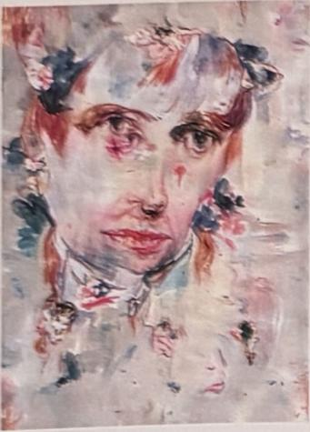
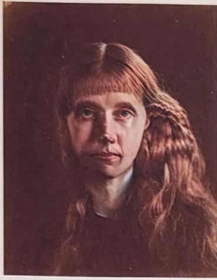
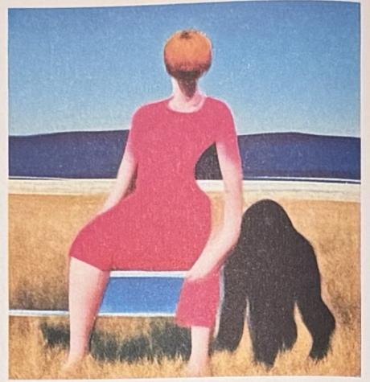
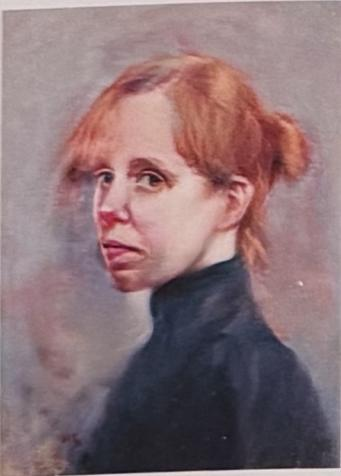
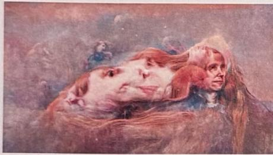
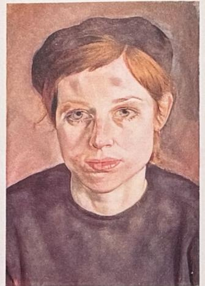
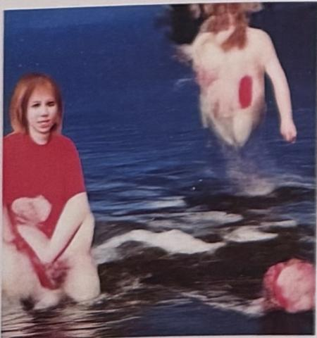
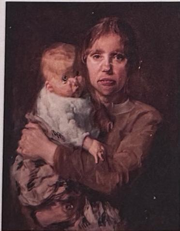
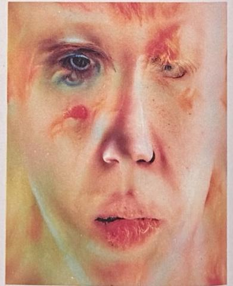
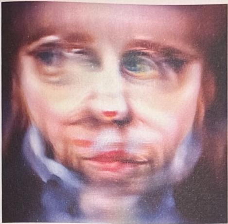
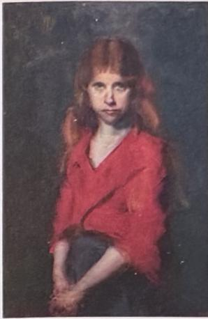
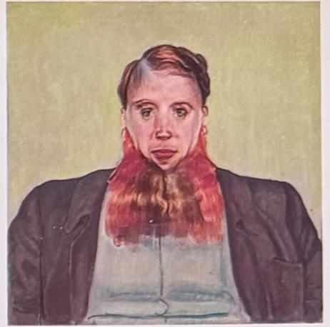
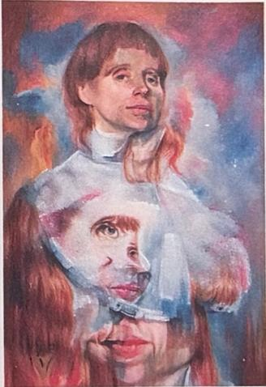
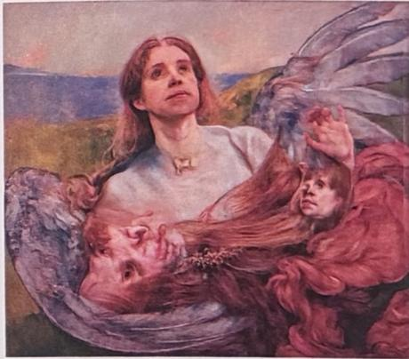
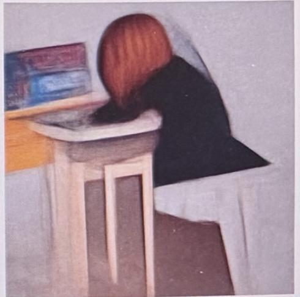
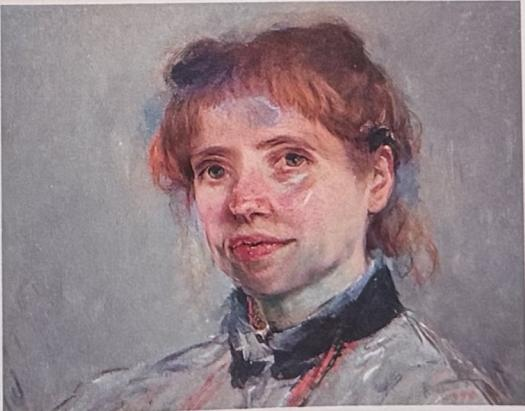
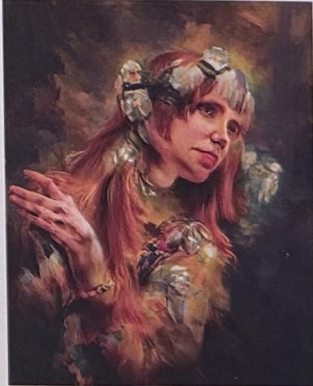
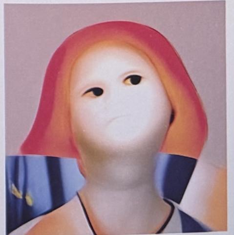
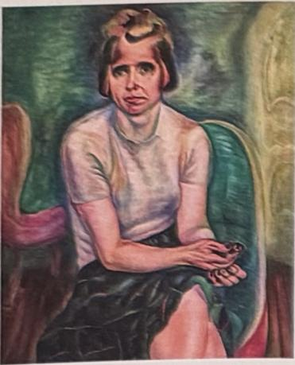
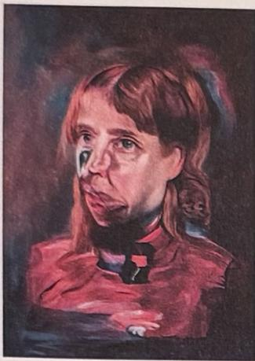
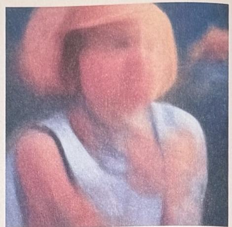
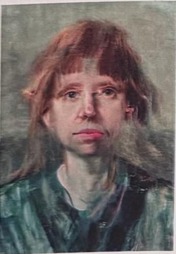
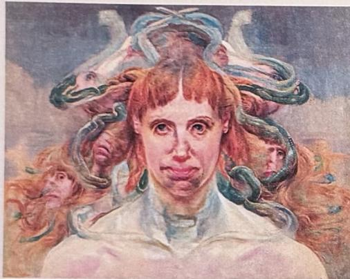
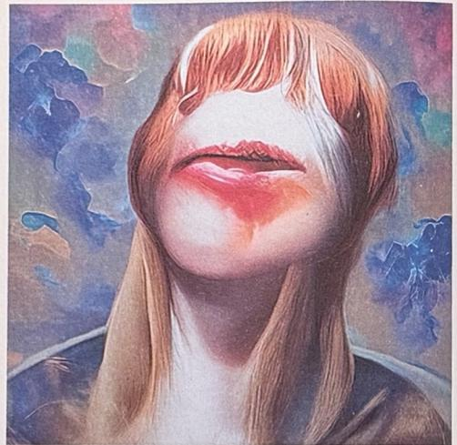
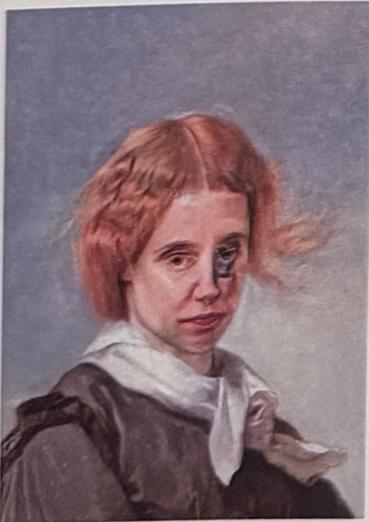
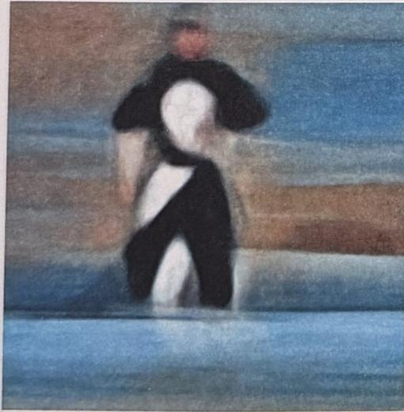
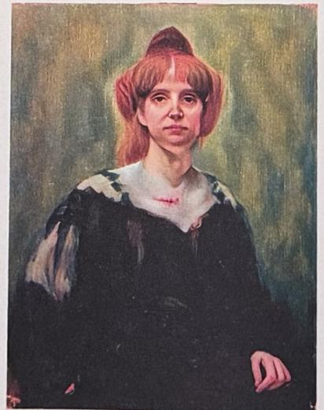
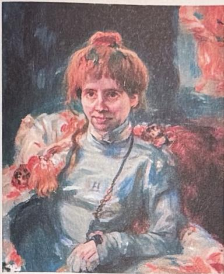
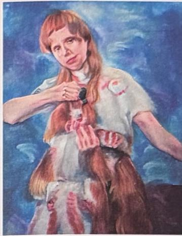
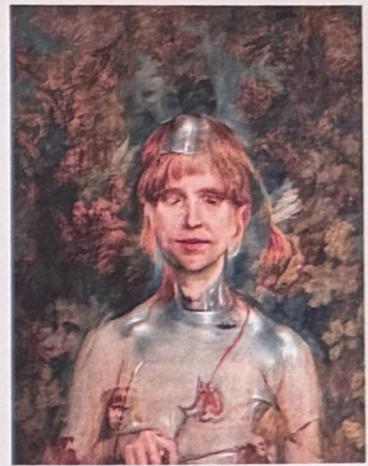
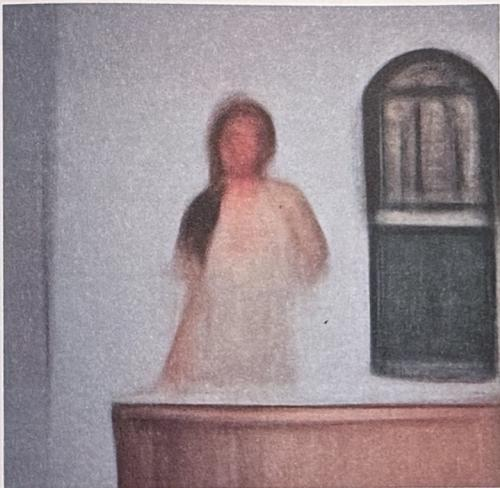
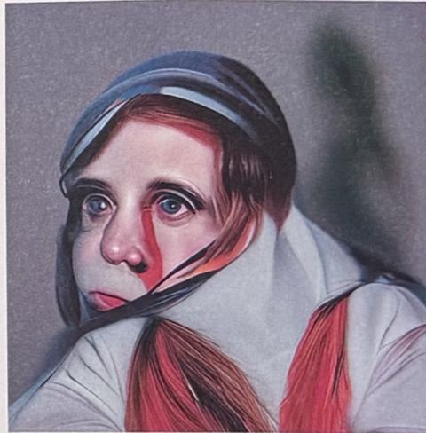
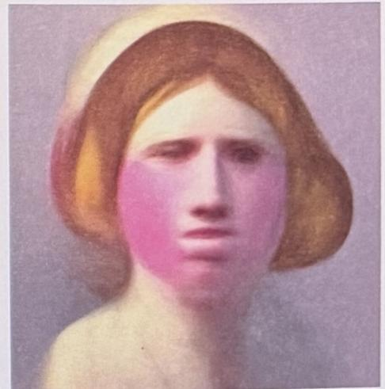
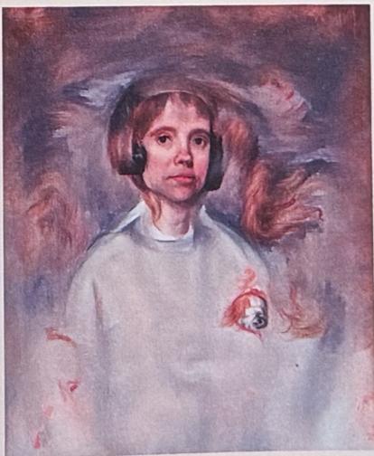
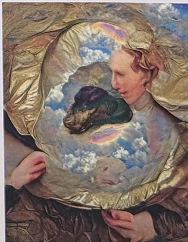
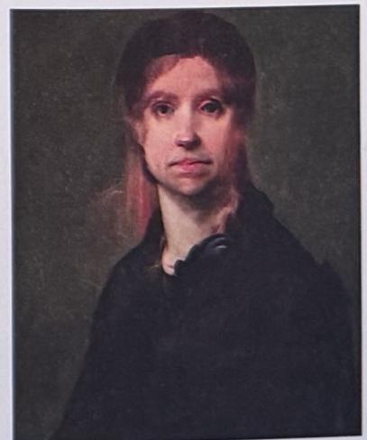
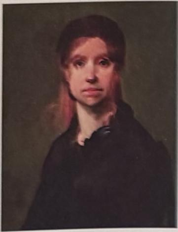
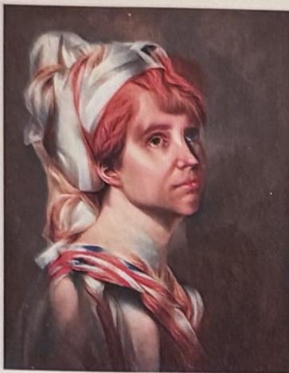
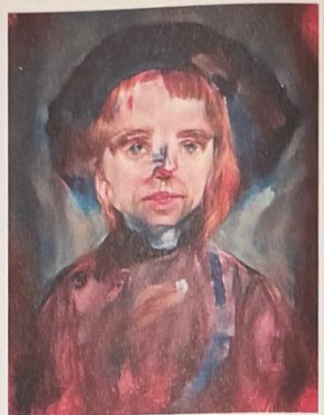
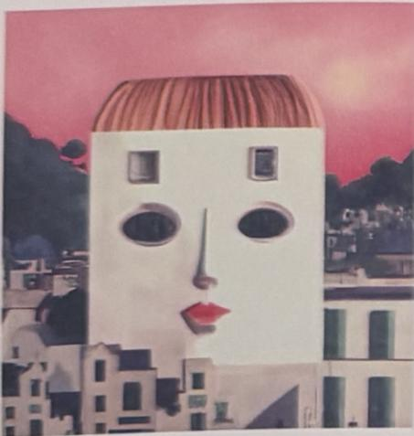
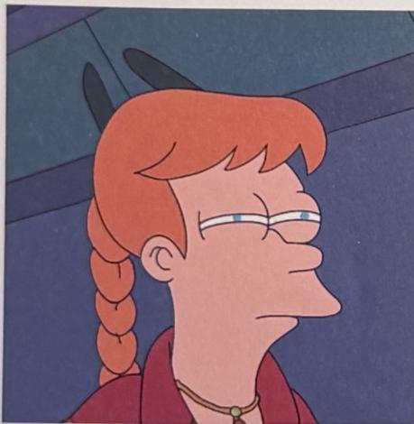
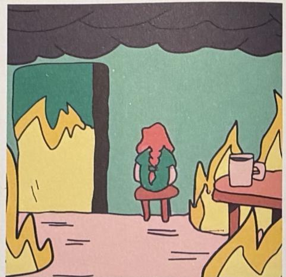
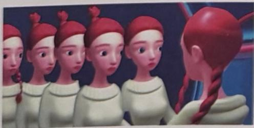
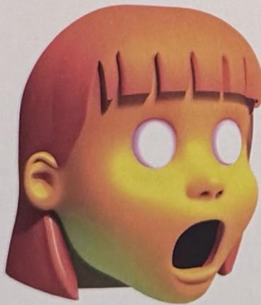
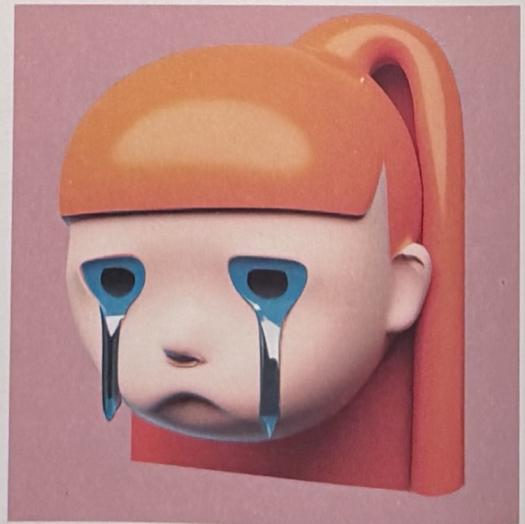
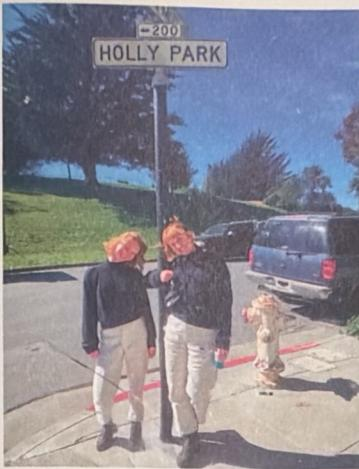
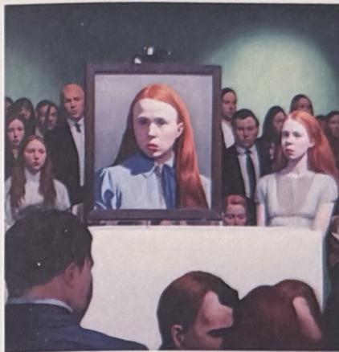
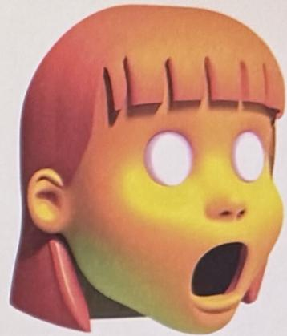
Infinite Images ∞ 1(2022)
In January 2020, OpenAI announced the release of DALL·E, a transformer model capable of generating convincing images from textual descriptions. Shortly after, OpenAI released CLIP (Contrastive Language Image Pre-Training), a publicly accessible neural network trained on image/text pairs. This led to an explosion of experimentation. By spring 2021, the artists Ryan Murdock and Rivers Have Wings, among others, were releasing free, open tools for public use, making it possible for anyone to play around with AI text-to-image generation by connecting CLIP's capacity to interpret natural language with novel image-generation techniques (such as Taming Transformer's VQGAN and OpenAI's own guided diffusion model). One need only type a description of the image they would like to see and the interaction of discriminator (CLIP) and generator (diffusion, VQGAN) produces an image satisfying the text-based prompt.
As text-to-image generated work proliferated, there was talk of it bringing forth a new art movement: 'Promptism', per the artist Johannez (writing in Ryan Murdock's 'Latent Visions' Discord), and referring to work made while exploring this astounding new capacity to conjure visual output through language.
In November 2021, Herndon and Dryhurst received special access to DALL·E 1 (which was never publicly released) to produce a private commission. Their experiments with this foundational text-to-image model in developing that initial work make up the series Infinite Images, which explores the nascent possibilities of a technology that would soon become mainstream.
The act of conjuring images using only language felt very, very new. For some time we'd had the capacity to generate images from the laborious process of training GANs, often waiting over night for results that invite the observer to squint and imagine a future of abundant images. CLIP made text-to-image possible. It felt like jamming, giving and receiving feedback while refining an idea with an inhuman collaborator. One could intuitively use it like an art-making tool.
Once AI models were able to make convincing images, we entered into a kind of neo-Pictorialist phase. The historical Pictorialists (ca. 1869 - ca. 1915) used photography not to accurately depict reality, but to convincingly communicate subjective feeling. It was during this time (which also saw wider access to cameras that required little technical expertise) that photography expanded beyond its scientific and archival uses to become an expressive medium. The parallels to machine learning image generation are strong. First came the laborious task of legitimising the technology as functional: can it accurately reflect the reality of the training material? Once this was demonstrated, the foundation was there to start deviating from function and experimenting with expression.
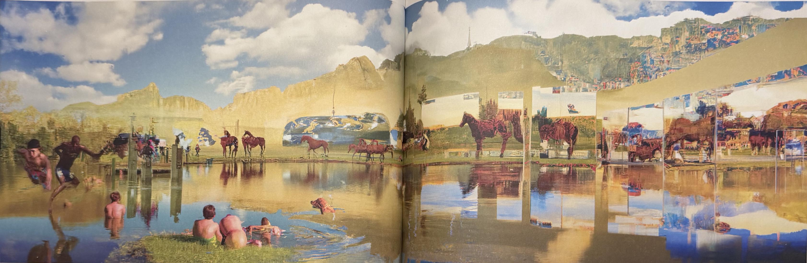
Readyweight θ (2024)
Alex Colville, Horse and Train, 1954, casein tempera on hardboard, 41.2 x 54.2 cm. Art Gallery of Hamilton, Ontario. Courtesy of Ann Kitz.
As AI models are trained, they compress data into representations of 'concepts'. These concepts (a person, a thing, an idea, etc.) are understood by the model in multiple dimensions and in relation to all of the other concepts the model recognises. The place in mathematical space that a model assigns to a given concept is called its 'embedding'. In theory, every possible thing a model can know — all of the infinite connections that can be drawn from the data it contains — already exists within it. In theory, the job of the AI artist therefore hinges as much on discovery as creation, as anything an artist might imagine is already right there in the models' latent space. Intrigued by this principle, Herndon and Dryhurst proposed the idea of an AI 'readyweight', which, with a nod to Marcel Duchamp's concept of the Readymade, reframes model 'prompting' as an act of selection. To demonstrate their idea, Herndon and Dryhurst created an original mutant horse sculpture, Readyweight θ, and sought to excavate this new work from an existing stable diffusion model. True to theory, a representation of this new sculpture could indeed be found within the latent space of a model that was trained before Readyweight θ's conscious creation.
To access the work, viewer/users mint the sculpture (as an NFT on Zora) and then unzip the file to reveal all of the components necessary for locating the work within Stable Diffusion's latent space. Once 'found', the work can be iterated and recontextualised by the viewer/user. The title Readyweight θ also refers to model weights, adjustable parameters that can be tuned during training to improve outputs, and the Creative Commons Zero (CCo) licence, which allows creators to waive all their copyright (and related rights) in relation to their works, effectively placing the works in the public domain.
Any original visual artwork made today may already exist within the embedding space of an AI model. It's worth sitting with that thought for a second as it's rather confounding. If I create an original sculpture or painting and then train an embedding to look for that work within the near infinite combination of vectors of the model's latent space, there is a strong chance it can be located there, at least conceptually. We wanted to see for ourselves, so ran a small test making an 'original' sculpture and training an embedding to search for it in a model that had been trained prior to the sculpture's existence. Sure enough, our special new artwork was already there. We called this phenomenon, the pre-existence of an idea within the model, a readyweight.
What does it mean when a new idea that we as artists have created can be identified as having previously existed? What does it mean when our job as artists is one of excavating the model to find this idea and to share it so that others might use that concept to make more works like it?
Protocolism: Shifting Paradigms in Art and Copyright
–Primavera De Filippi
Introduction
Artists have been experimenting with protocols for a long time, creating works based on specific instructions or guidelines. This approach makes it possible for anyone executing the protocols' instructions — be they either humans or machines — to produce new artworks that all share a common artistic DNA (derived from the protocol) while simultaneously exhibiting their own distinctive properties as artistic creations. Artists such as Sol Lewitt and John Cage exemplified this approach, as with Lewitt's instruction-based art and Cage's audience-driven compositions. Among others, the Oulipo literary movement used constrained writing techniques to produce literary works, choreographers such as Merce Cunningham wove randomness and chance into their works, Athos Bulcão's Community Mosaics allowed for a particular form of co-creation between artist and community. More recently, artists such as Omsk Social Club have created live-action role-play games directly involving the audience within a particular script.
Today, the use of protocols in art, which I call 'Protocolism', is more pronounced than ever with digitally-mediated artists working with the media of their times, including blockchain and AI, to produce new protocols. My own work developing Plantoids is an experiment in exemplifying this phenomenon. Plantoids are self-replicating life forms that use crypto funds to invite and commission other artists to contribute to the production of new Plantoids, while remaining faithful to the protocol substrate. Holly Herndon and Mat Dryhurst are best known for their Holly+ protocol; however, they have been engaging in 'protocol art' for over a decade.
From a legal standpoint, Protocolism blurs the lines between authors and contributors, and it questions the very foundations of copyright law, including conventional notions of authorship, ownership, even the creative process itself. As such, the legal recognition of protocols as artworks in and of themselves remains elusive.
As Protocolism as an artistic practice has acquired significant popularity in the recent years, especially since the advent of generative AI, the need to formalise and recognise the artistic quality of these protocols has become more pressing. Artists increasingly use machines as partners and tools in their creation process, encoding their artistic practice into protocols that allow for co-creation with AI-driven systems and with each other. This evolution not only redefines the generative process, but it also compels a re-evaluation of copyright law in the age of generative AI.
In the following sections, we first introduce the concept of Protocolism, to subsequently investigate its defining features, its impact on copyright, and its relationship with generative AI.
Defining Protocolism
Protocolism revolves around the creation of 'artistic protocols'. These protocols comprise sets of instructions and constraints meticulously crafted to guide the production of unique artworks. They serve as the bridge between the two pivotal figures: the protocol artist, on the one hand, and a diverse array of 'instantiators' (both human and non-human) on the other; i.e. those who instantiate the protocol into tangible creations that themselves qualify as distinct artistic creations. This collaborative approach challenges conventional notions of artistic authorship, as the resulting artworks bear the engineering imprint of the protocol artist along with that of the instantiators.
Constitutive elements
To provide a preliminary definition of Protocolism, we must first delve into the constitutive elements that form the bedrock of an artistic protocol.
Protocol as art: To qualify as art, a protocol must be recognised as a work of art. This means that it must be at least claimed by the artist as an artwork, and, ideally, also be recognised as such by the public. From the perspective of the law, this means that the protocol reflects a certain degree of creativity and originality. Indeed, an artistic protocol isn't merely a set of mechanical instructions; it's a canvas that ingrains the artist's creativity, but also leaves enough room for the protocol's instantiators to express their own creative endeavours.
Guidance and influence: While the artistic protocol exists independently of its execution or performance, it must be intended to inform and influence the creation of new works that instantiate the protocol. As such, it must be sufficiently precise and distinctive to ensure that all the resulting artworks can be recognised as stemming from that particular protocol.
Creative discretion: Here's where Protocolism takes a fascinating turn. While the protocol ingrains an artist's creativity, it does not enshrine it. An artistic protocol exhibits a sufficient dose of ambiguity to make room for the creative discretion of those who execute the protocol, who are free to implement it in many different manners, as long as it preserves a particular pattern integrity.
In essence, Protocolists are the architects, the puppeteers pulling the strings from behind the scenes, guiding the emergence of artworks that embody both their spirits and the spirits of those who bring their protocol to life. This synergy between the protocol artist and the instantiator is at the core of the Protocolism movement, which brings to the forefront the inherently collaborative and interconnected nature of artistic practice.
Protocolism and music: similarities and disparities
The distinction between Protocolism and musical scores lies in the nature of their execution and creative output. Musical scores, in essence, can be perceived as protocols awaiting interpretation by a performer. Each performer injects their unique style and skill set into the score, resulting in a new and distinct interpretation of the musical work.
Protocolism, however, sets itself apart by transcending the boundaries of mere performance. When a protocol is executed, it doesn't replicate an existing work; instead, it generates an entirely new creation. This differentiation is crucial, especially when considering copyright implications. In the context of music (or other performing arts), each performance essentially revisits the same musical work, which falls under the purview of the original composer's exclusive rights. While performing artists have rights in their performances, these are not true intellectual property rights, but rather 'neighbouring rights' which refer to ancillary activities surrounding an original work rather than to the creation of new works. They do not, as such, give rise to a new, copyrighted work.
In contrast, in the context of Protocolism, every execution of a protocol generates a novel work, potentially eligible for its own copyright protection (provided that it qualifies as an original work with a sufficient degree of creativity). Importantly, the work resulting from this execution does not qualify as a derivative work, since it does not substantially reproduce the 'expression' of the original work of authorship enshrined in the protocol. This protects all agents instantiating the protocol from any claim of infringement on the copyright of the protocol artist, who does not always have a say as to how the protocol is manifested into reality.
While a standard musical score does not qualify as Protocolist artwork, this does not mean that musical works cannot, in some cases, embrace the practices of Protocolism. Examples such as John Cage's thought-provoking '4' 33" , Terry Riley's In C , Steve Reich's evolving Piano Phase, and George Lewis's Voyager system, exemplify how musical compositions can transcend the confines of traditional performance and become Protocolist works in their own right. Similarly, Holly+ is a musical project that embraces the ethos of Protocolism. It does not call for the mere performance of a score, but rather for the generation of new works of music through a particular set of primitives, whose resulting combinations can be influenced but not mandated nor foreseen by the original artists.
Protocolism and generative AI: friends or foes?
The emergence of generative AI has sparked a profound debate in the artistic domain: some artists are embracing it as a powerful tool for unleashing their creativity, while others are approaching it with trepidation, fearing that they will be usurped by the relentless march of algorithms. But what is the source of this significant divide? What drives the fear and excitement?
For many artists, the concern surrounding generative AI stems from the perception that AI-driven creativity will compete with human creativity, creating a race to the bottom that will ultimately jeopardise the livelihoods of many artists and creative professionals. Conversely, some artists view generative AI as a valuable collaborator, an extension of their creative persona rather than a threat to their artistic identity. They believe that even if AI models are capable of generating new works that encapsulate their distinctive approaches as artists, the artists will be able to benefit because they will always be regarded as the (co-)authors of the resulting works.
This latter category of artists understand that generative AI operates within the boundaries of a protocol. Indeed, properly trained and fine-tuned generative models ultimately consist of sets of inferential rules governing artistic creation, allowing machines to mimic, and even expand upon, a particular artistic approach. In other words, artists who create models as artworks are Protocolists stipulating the rules that will define and constrain the latent space of their models. Once the boundaries of the latent space have been established, anyone can use the model to explore the latent space of (yet to be made) creations that belong to the same artistic protocol. As such, with the use of generative AI, artists are not relinquishing their creative endeavours, but rather expanding them. Generative AI doesn't replace the artists, it amplifies their capacity to create. It is more akin to a personal assistant, faithfully executing the artists' protocols and thereby contributing to their ever-expanding body of work. This synergy between artists and generative AI is a testament to the power of human-machine collaboration. diverse array of 'instantiators' (both human and non-human) on the other; i.e. those who instantiate the protocol into tangible creations that themselves qualify as distinct artistic creations. This collaborative approach challenges conventional notions of artistic authorship, as the resulting artworks bear the engineering imprint of the protocol artist along with that of the instantiators.
Constitutive elements
To provide a preliminary definition of Protocolism, we must first delve into the constitutive elements that form the bedrock of an artistic protocol.
Protocol as art: To qualify as art, a protocol must be recognised as a work of art. This means that it must be at least claimed by the artist as an artwork, and, ideally, also be recognised as such by the public. From the perspective of the law, this means that the protocol reflects a certain degree of creativity and originality. Indeed, an artistic protocol isn't merely a set of mechanical instructions; it's a canvas that ingrains the artist's creativity, but also leaves enough room for the protocol's instantiators to express their own creative endeavours.
Guidance and influence: While the artistic protocol exists independently of its execution or performance, it must be intended to inform and influence the creation of new works that instantiate the protocol. As such, it must be sufficiently precise and distinctive to ensure that all the resulting artworks can be recognised as stemming from that particular protocol.
Creative discretion: Here's where Protocolism takes a fascinating turn. While the protocol ingrains an artist's creativity, it does not enshrine it. An artistic protocol exhibits a sufficient dose of ambiguity to make room for the creative discretion of those who execute the protocol, who are free to implement it in many different manners, as long as it preserves a particular pattern integrity.
In essence, Protocolists are the architects, the puppeteers pulling the strings from behind the scenes, guiding the emergence of artworks that embody both their spirits and the spirits of those who bring their protocol to life. This synergy between the protocol artist and the instantiator is at the core of the Protocolism movement, which brings to the forefront the inherently collaborative and interconnected nature of artistic practice.
Protocolism and music: similarities and disparities
The distinction between Protocolism and musical scores lies in the nature of their execution and creative output. Musical scores, in essence, can be perceived as protocols awaiting interpretation by a performer. Each performer injects their unique style and skill set into the score, resulting in a new and distinct interpretation of the musical work.
Protocolism, however, sets itself apart by transcending the boundaries of mere performance. When a protocol is executed, it doesn't replicate an existing work; instead, it generates an entirely new creation. This differentiation is crucial, especially when considering copyright implications. In the context of music (or other performing arts), each performance essentially revisits the same musical work, which falls under the purview of the original composer's exclusive rights. While performing artists have rights in their performances, these are not true intellectual property rights, but rather 'neighbouring rights' which refer to ancillary activities surrounding an original work rather than to the creation of new works. They do not, as such, give rise to a new, copyrighted work. generates a novel work, potentially eligible for its own copyright protection (provided that it qualifies as an original work with a sufficient degree of creativity). Importantly, the work resulting from this execution does not qualify as a derivative work, since it does not substantially reproduce the 'expression' of the original work of authorship enshrined in the protocol. This protects all agents instantiating the protocol from any claim of infringement on the copyright of the protocol artist, who does not always have a say as to how the protocol is manifested into reality.
While a standard musical score does not qualify as Protocolist artwork, this does not mean that musical works cannot, in some cases, embrace the practices of Protocolism. Examples such as John Cage's thought-provoking 4' 33", Terry Riley's In C, Steve Reich's evolving Piano Phase, and George Lewis's Voyager system, exemplify how musical compositions can transcend the confines of traditional performance and become Protocolist works in their own right. Similarly, Holly+ is a musical project that embraces the ethos of Protocolism. It does not call for the mere performance of a score, but rather for the generation of new works of music through a particular set of primitives, whose resulting combinations can be influenced but not mandated nor foreseen by the original artists.
Protocolism and generative AI: friends or foes?
The emergence of generative AI has sparked a profound debate in the artistic domain: some artists are embracing it as a powerful tool for unleashing their creativity, while others are approaching it with trepidation, fearing that they will be usurped by the relentless march of algorithms. But what is the source of this significant divide? What drives the fear and excitement?
For many artists, the concern surrounding generative AI stems from the perception that AI-driven creativity will compete with human creativity, creating a race to the bottom that will ultimately jeopardise the livelihoods of many artists and creative professionals. Conversely, some artists view generative AI as a valuable collaborator, an extension of their creative persona rather than a threat to their artistic identity. They believe that even if AI models are capable of generating new works that encapsulate their distinctive approaches as artists, the artists will be able to benefit because they will always be regarded as the (co-)authors of the resulting works.
This latter category of artists understand that generative AI operates within the boundaries of a protocol. Indeed, properly trained and fine-tuned generative models ultimately consist of sets of inferential rules governing artistic creation, allowing machines to mimic, and even expand upon, a particular artistic approach. In other words, artists who create models as artworks are Protocolists stipulating the rules that will define and constrain the latent space of their models. Once the boundaries of the latent space have been established, anyone can use the model to explore the latent space of (yet to be made) creations that belong to the same artistic protocol. As such, with the use of generative AI, artists are not relinquishing their creative endeavours, but rather expanding them. Generative AI doesn't replace the artists, it amplifies their capacity to create. It is more akin to a personal assistant, faithfully executing the artists' protocols and thereby contributing to their ever-expanding body of work. This synergy between artists and generative AI is a testament to the power of human-machine collaboration.
Redefining copyright in the age of mass generative production
The digital age enabled the instantaneous reproduction and sharing of ideas and creative content, thereby challenging the underpinnings of intellectual property (see Walter Benjamin's 'The Work of Art in the Age of Mechanical Reproduction'). In the age of generative AI, we are shifting away from mechanical reproduction and towards mass generative production. Generative AI makes it possible for new artworks to be produced in mass and in the blink of an eye — where each work qualifies neither as a copy, nor as a remix or derivative, but rather as a new work in and of itself. However, if every iteration produces a new work, then who should be regarded as the author of those works? Is it the artist who produced the model? The user prompting (or employing) the model? Or simply the AI model itself? And in which of these cases would copyright even apply to the resulting outcome? The answer remains uncertain. What is certain is that copyright law is increasingly struggling to adapt to this new world populated by artistic protocols and generative AI artworks.
The elusive notion of authorship
Under today's copyright law, the creator of an artwork is regarded as the sole author of that work, even when the artwork is derived from another work. The author of the original artwork may have a copyright claim over derivative works, but not an authorship claim. Protocolism challenges this distinction by embedding the notion of authorship into a much more intricate web of interdependence.
To the extent that the protocol encapsulating the style, the identity, or the essence of an artist can be regarded as an artwork in and of itself, any instantiation of this protocol into a new artwork will simultaneously generate a novel manifestation of the protocol artwork. This means that the protocol artist and the agent instantiating the protocol into a new work will both qualify as co-authors of the resulting work — each contributing, to varying degrees, to the same artistic endeavour. Hence, the process of instantiating an artistic protocol into a new artwork ultimately contributes to expanding the body of work of both the protocol instantiator and the protocol artist. This is true even if the latter is not even aware of these artworks being created. In fact, different protocol artists may choose to be more or less conditional about how their protocols are used. For example, an artist who has encapsulated a protocol into a generative AI model might only provide access to that model in a tightly controlled environment (as opposed to releasing the model for free online, for example). These choices can themselves be regarded as an integral part of the protocol. At the same time, provided that the rules of the protocol are satisfied, the protocol artist ultimately relinquishes control over the way the protocol will be instantiated by others. This is a departure from historical copyright law, where the creator wields significant control over the making of derivative works.
This conundrum demonstrates how these new artistic practices no longer fit comfortably within the established framework of copyright law and how the very concept of authorship is becoming increasingly ambiguous in an era where protocols increasingly dictate the creation of artworks, and AI-driven systems blur the lines between human and machine creation. Protocolism challenges us to reevaluate how we define authorship, prompting us to identify the symbiotic relationship between the protocol artist — who conceives the overarching framework for generating new works — and the multitude of agents (human and non-human) involved in executing these protocols.
The copyright conundrum
Protocolism also challenges the conventional conception of what can actually be regarded as an act of authorship. Traditionally, copyright protection emerges only after a work has been 'fixated' (i.e. instantiated) in a tangible medium of expression. Yet, under the paradigm of Protocolism, the core creative endeavour enshrined in the artistic protocol subsists regardless of whether it has been instantiated into a work. So what is the copyright status of an artist's protocol? Can it be protected before it has been manifested into an artwork? Can it be protected at all, given its purely conceptual form?
The complexity deepens when a protocol is executed not by the protocol artist, but by a third-party (human or machine). In most countries, copyright law stipulates that the author of any work of authorship is the one that produced that work. In the case of Protocolism, however, so long as the instructions of the protocol are fulfilled, even though the protocol artists do not at all participate in the process of instantiating their protocol into a work, they will nonetheless be regarded as co-authors of all works resulting from the execution of their protocols, to the extent that they are recognised as the authors of the protocol. The reason is that these resulting works are an embodiment of two separate artworks: the protocol, on the one hand, authored by the protocol artist, and the actual manifestation of such protocol into an artistic creation, on the other hand, authored by the protocol instantiator. Things are further complicated when multiple artistic protocols are combined with one another in order to produce a new work of authorship. For instance, in the context of generative AI, several AI models can be stacked to produce an output that embodies the aura of multiple protocol artists, who therefore are all to some extent co-authors of the resulting work.
More than an artistic movement
Protocolism is not just an artistic movement; it is a philosophy that emerges at the intersection of technology and creativity, transcending the traditional boundaries of art. In a world driven by rapid technological advancements, Protocolism questions established notions of copyright, including the very concepts of authorship and ownership. It suggests a different lens with which to view cultural production and the creation of cultural artifacts, one where creativity is a collective endeavour generated through the contributions of multiple individuals, where multiple artworks can co-exist within the same manifestation of a work.
As such, one of the most remarkable aspects of the Protocolism movement is its ability to provoke reflection on the foundations of copyright, originality, and creative ownership. In particular, propelled by the massive adoption of generative AI, Protocolisms invite us to enter into a new era of artistic creation, where established legal concepts are no longer adequate. Protocolism pushes us to consider alternative models that move beyond scarcity and exclusivity, providing a novel standpoint for understanding contemporary artistic practices imbued with a greater degree of collaboration. Essentially, Protocolism allows for a new 'code to live by' for artists and creators living in the age of generative AI.